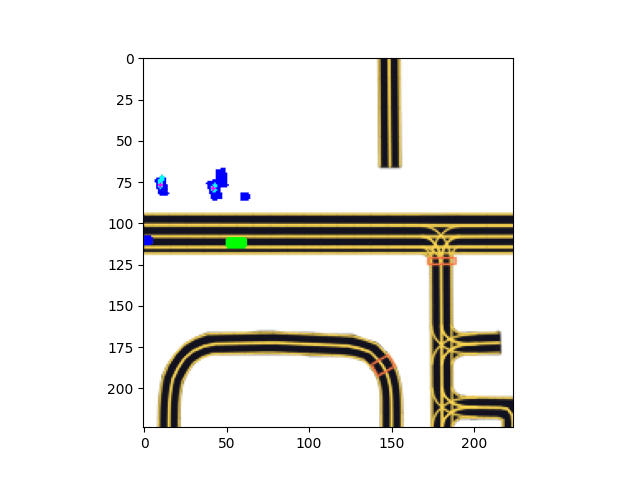

Implemented a motion planning model based on GoogLeNet architecture, trained on the Lyft's Planning and Prediction Dataset. The model is capable of planning the motion of the ego vehicle
abiding to it's various contraints.
The base model is a GoogLeNet model that is pretrained. It is customized with multiple Fully Connected convolution layers at the output to meet the requirements.
The input layer is also customized to match the output size of the rasterizer.
Autonomous Driving using DQN
In this project a DQN trained controller controls a vehicle in the CARLA
simulator environment enabling autonomous driving.
The DQN model learns an optimal policy that chooses the best vehicle speed and steering angle control command.

 The RGB camera data is fed to the Deep Neural Network built using the Xception architecture which outputs 3 Q-values. Each Q-value corresponds to an action the agent can take in the environment.
The agent takes an action in every step associated with highest Q-value. The Q-value update is governed by the Bellman Optimality equation while the exploration-exploitation is handled by Epsilon-Greedy algorithm.
The RGB camera data is fed to the Deep Neural Network built using the Xception architecture which outputs 3 Q-values. Each Q-value corresponds to an action the agent can take in the environment.
The agent takes an action in every step associated with highest Q-value. The Q-value update is governed by the Bellman Optimality equation while the exploration-exploitation is handled by Epsilon-Greedy algorithm.

In this project, a convolutional neural network was designed to extract facial features from the two given
images. The network detects whether the two images belong to the same person or not. Dataset used for this
project is the LFW-dataset
Traditional Machine Learning Classifiers like Bayes Classifier, K-NN, SVM, Kernel-SVM, Boosted SVM are implemented from
scratch using mathematical formulation, without any prebuilt packages or libraries. A custom face image dataset is split into
training, validation, and testing sub datasets. Label generation and preprocessing of data. PCA and MDA dimensionality reduction preprocessing
techniques are applied for training optimization. The classifiers can detect the subject label(Face Recognition) or recognize a non-expressive
face and an expressive face(such as a smile).

A customized googLeNet model that performs motion prediction for all agents visible to the ego vehicle at a given point in time.
The trained model predicts 5 seconds into the future. It is trained on Lyft's motion prediction dataset.